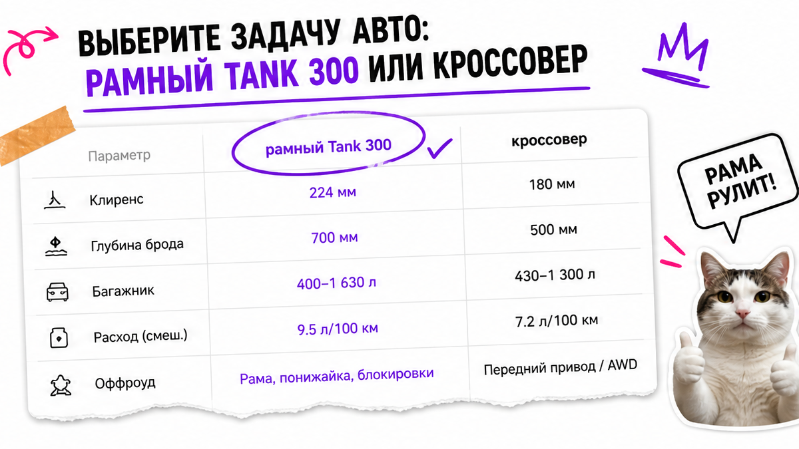
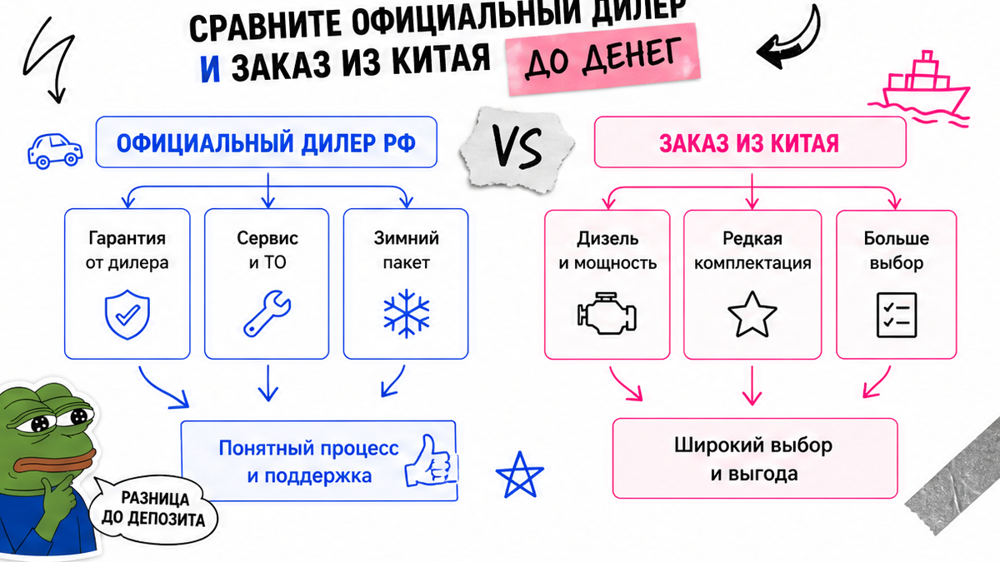
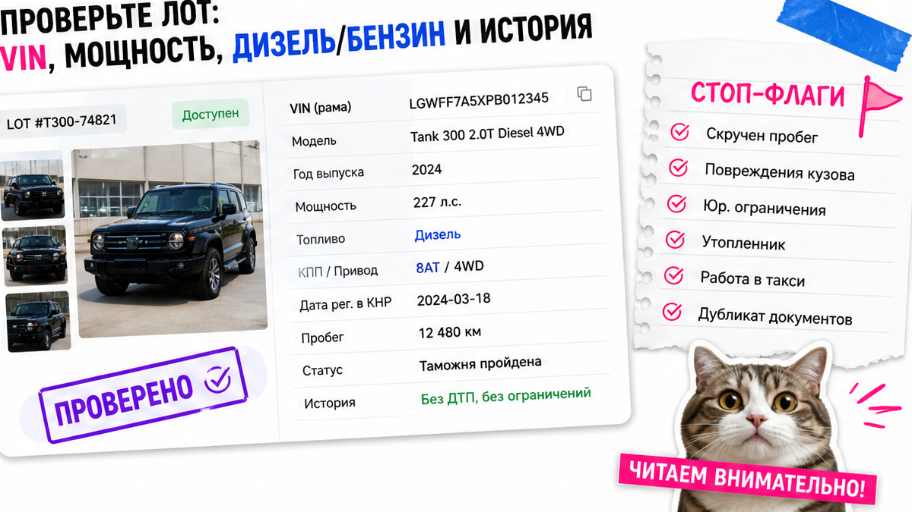

В Тюмени человек увидел в Telegram лот "Tank 300 дизель из Китая, дешевле дилера, депозит сегодня" и кинул аванс по скрину цены. Потом всплыли типичные риски: машина моложе 180 дней без ясного экспорта, мощность выше льготного порога утиля, а "дизель" – не тот путь, что бензин локальной сборки. Ниже – чеклист до депозита: VIN, дата регистрации в КНР, когда Китай ещё имеет смысл после старта АВТОТОР, и куда запросить расчёт без готовых сумм из чата.
TL;DR / Быстрый инсайт: С мая 2026 Tank 300 серийно собирают на АВТОТОР в Калининграде – "пригнать из Китая" больше не единственный вариант. Китай обычно берут ради других моторов (часто дизель) или редкой комплектации. Депозит – только после карточки лота: полный VIN, мощность, дата регистрации в КНР, ветка дилер vs заказ. Суммы пошлин и утиля в статье не угадываем – их считают в каталоге под комплектацию.
Мы в Авто-Сейлс во Владивостоке чаще останавливаем новичка перед кнопкой "оплатить", чем продаём сказку "под ключ за N дней". На практике красивая цена в чате почти всегда без полного пакета: без VIN, без даты первой регистрации, без честного разговора про мощность. Если боитесь потерять предоплату – сделайте этот гайд своим стоп-правилом на сегодня.

Сначала решите задачу, а не "хочу как у блогера". Официальные ТХ: рамный 5-местный SUV, длина около 4760 мм, база 2750 мм, клиренс 224 мм, брод до 700 мм. Это не городской паркетник с мягкой подвеской.
На пальцах про привод: Part-time (Драйв/Премиум) – полный включаете сами под грязь. ToD (Сити) – удобнее для города и снега. Официал в РФ – бензин 2.0T около 218–220 л.с. и 8-ступенчатый автомат. Расход в городе у владельцев часто 13–16 л/100 км: заложите ожидание до покупки.
Делать: выберите сценарий (бездорожье vs город+снег) и только потом смотрите лоты. Не делать: гнать "танк из Китая", если нужен тихий семейный кроссовер.

Сюрприз 2026: с мая Tank 300 серийно собирают на АВТОТОР (новости бренда и завода – март–июнь 2026). Например, локальный путь даёт гарантию через сеть TANK, зимний пакет и сервис. Китайский заказ – про другой моторный ряд (часто дизель), редкую комплектацию или цену лота, а не про "единственный способ получить Танк".
| Критерий | Официальный дилер РФ | Заказ из Китая |
|---|---|---|
| Когда уместно | Нужны бензин 2.0, гарантия, сервис рядом | Нужен дизель/редкая комплектация или конкретный лот |
| Что покупаете | Локальная сборка, комплектации Драйв/Премиум/Сити | Импорт: новые/с пробегом, китайский мультимедиа-контур |
| Риски до депозита | Очередь, "не та" комплектация, допы | VIN, 180 дней, утиль по мощности, русификация ШГУ |
| Документы | Дилерский пакет, гарантия сети | Экспорт → Владивосток → СВХ → СБКТС → ЭПТС |
Итоговый вердикт: Нужен понятный бензиновый Tank с гарантией – сначала посчитайте дилера. Китай имеет смысл, когда осознанно хотите другой мотор (часто дизель) или лот не из салона. Не делайте депозит "потому что в чате дешевле", пока не сравнили оба пути.
Актуальные варианты и индивидуальный расчёт – в каталоге avto-sales125.ru. Форм на странице нет: цифры живут в каталоге, не в "как у соседа".

Типичная ошибка – верить карточке "как новый" без полного VIN. Зафиксируйте: полный VIN, год, бензин/дизель/гибрид, мощность в л.с. и кВт, объём, пробег, дата первой регистрации в КНР, экспортёр. Нет полного VIN – нет разговора про депозит.
Ориентир по утильсбору для физлица в публичных разборах 2026 – порог около 160 л.с. Типичный Tank 2.0 около 218 л.с. в "льготу как у малолитражки" не попадает. Точную сумму не копируйте из чата: запросите расчёт в каталоге под мощность, объём и возраст.
На б/у из Китая проверьте историю мостов и редукторов. В реальном проекте на Drive2 встречаются нештатные пары (например, 4.56 вместо 3.9) – машина едет иначе, чем сток у дилера. Русификация магнитолы (ШГУ) – отдельный хвост: заложите время до оплаты.
Делать: проверьте совпадение VIN и мощность в цифрах лота. Не делать: переводить аванс по скрину без даты регистрации в КНР.
Путаница "приехал в порт" и "можно ехать" ломает ожидания. На пальцах цепочка такая:
Workflow ввоза:
Покупка/экспорт в КНР → порт Владивостока → СВХ → таможенный выпуск → СБКТС → ЭПТС → ОСАГО → учёт в ГИБДД
СВХ – склад временного хранения после порта. СБКТС – документ о безопасности конструкции для учёта. ЭПТС – электронный паспорт: с ноября 2020 на импорт оформляют именно его, бумажный "как раньше" ждать не нужно (реестр – dp.elpts.ru). Ветку оформления (Владивосток или транзит в регион прописки) выберите до оплаты логистики.
Делать: заложите этапы по блокам и запас на СВХ. Не делать: обещать себе "ключи через неделю" по чужому кейсу.
Личный пакет без которого брокер и СВХ встанут: паспорт, ИНН, СНИЛС, способ оплаты, подтверждения. Со стороны машины – договор/инвойс, экспортные бумаги, соответствие VIN.
Делать: соберите пакет заранее и работайте с прозрачным договором. Не делать: верить схеме "серый обход" – она бьёт по деньгам сильнее любой "экономии".
Нужен разбор лота – напишите в Telegram avtosales125. Офис во Владивостоке (Днепровская 40а, стр. 4) – хаб логистики: СВХ, таможня и выдача по России.
Понятный результат на сегодня: заполненный лист по одному Tank 300. Когда все пункты отмечены, вы сможете решить – переводить деньги или сначала запросить расчёт.
Критерий результата: до депозита отмечены все 10 пунктов; VIN/мощность/дата сверены; вы понимаете "дилер или Китай"; суммы не выдуманы. Получите расчёт в каталоге Авто-Сейлс – и только потом решайте про депозит.
Материал проверен: Редакция Авто-Сейлс (эксперты по авто под заказ из Японии, Кореи и Китая).
Достоверность: факты сверены с материалами TANK RU и АВТОТОР о локальной сборке 2026, открытыми разборами растаможки через Владивосток и порога утильсбора, практикой сопровождения заказов; актуальные суммы пошлин и утиля – только индивидуальный расчёт в каталоге.
Дилер после локализации на АВТОТОР даёт бензиновый контур, гарантию и сервис сети. Китай берут ради других моторов (часто дизель), редкой комплектации или конкретного лота. Сравните оба пути до депозита.
Ориентир по блокам: порт → СВХ → таможенный выпуск → СБКТС → ЭПТС → ОСАГО → учёт. Календарные дни зависят от лота – не копируйте чужой "под ключ за N дней" как обещание себе.
Можно, если до депозита есть полный VIN, честная история пробега и проверка мостов/редукторов. Типичная ошибка – считать б/у "как новый сток". Нет истории – лучше другой лот.
В каталоге Авто-Сейлс под вашу мощность, объём и возраст. Чужой скрин "как у соседа" почти всегда под другой лот. Ориентир порога льготы около 160 л.с. – для типичного 2.0 Tank проверьте заранее.
Часто да: китайский ШГУ может жить на своём языке. Заложите русификацию как отдельный пункт до депозита, а не как "потом в гараже".
Остановитесь. Запросите VIN, дату регистрации в КНР и инвойс. Если вместо документов – давление, откажитесь: результат проверки важнее "упущенного" лота. Сможете вернуться к сделке, когда пакет полный.